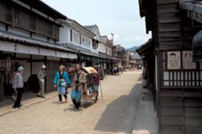

Esta nueva atracción turística combina el estudio Toei Co., Ltd de Kioto con un parque temático para los aficionados del cine. Alguno de los escenarios abiertos al público están repletos de réplicas a escala de las calles del periodo Edo (1603-1867), así como casas de samurais. Puede que coincida con la filmación de alguna película para el cine o la TV. Otra de las atracciones es una aventura en 3D del viejo Japón. En Shashin-kan podrá disfrazarse de guerrero samurai o de espía ninja y hacerse un reportaje fotográfico. El parque temático también es conocido por el sobrenombre de “Holywood Japonés”.
Atras